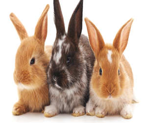

La Clínica Veterinaria ITC es la clínica veterinaria que estabas buscando para
el cuidado de tu mascota. Nuestro objetivo es dar solución a los posibles problemas médicos sanitarios de tu
animal de compañía, colaborando en la mejora y el mantenimiento del estado de salud de nuestros pequeños
amigos.

Cuidado de Perros
Cuidar a un perro implica compromiso y atención. En general, es importante
procurar una alimentación saludable para ellos, así como favorecer su actividad física y estimular
su socialización. También es fundamental ofrecerle cuidados y revisiones veterinarias para controlar
su estado de salud y mejorar su calidad de vida
1. Alimentación de calidad
2. Educación animal
3. Higiene del perro
4. Paseos y actividad física
5. Atención y cuidados veterinarios
Cuidado de Gatos
Pese a que en sus hábitos diarios ya incorporan el acicalamiento personal
como medida de higiene, hay otra serie de aspectos que debes tener en cuenta que para que se sientan
felices y cuidados.
Estos son los principales puntos sobre cómo cuidar un gato:
1. Alimentación de calidad
2. Educación animal
3. Higiene del gato
4. Socializacion
5. Atención y cuidados veterinarios

Cuidado de Conejos
Al adquirir un conejo es importante llevarlo a una primera revisión donde
nos podrán confirmar el sexo (si se trata de un gazapo) y nos informarán de las vacunas necesarias
(mixomatosis y enfermedad hemorrágica vírica de los conejos)
1. Alimentación de calidad
2. Espacio de recreacion
3. Higiene del conejo
4. Socializacion
5. Atención y cuidados veterinarios